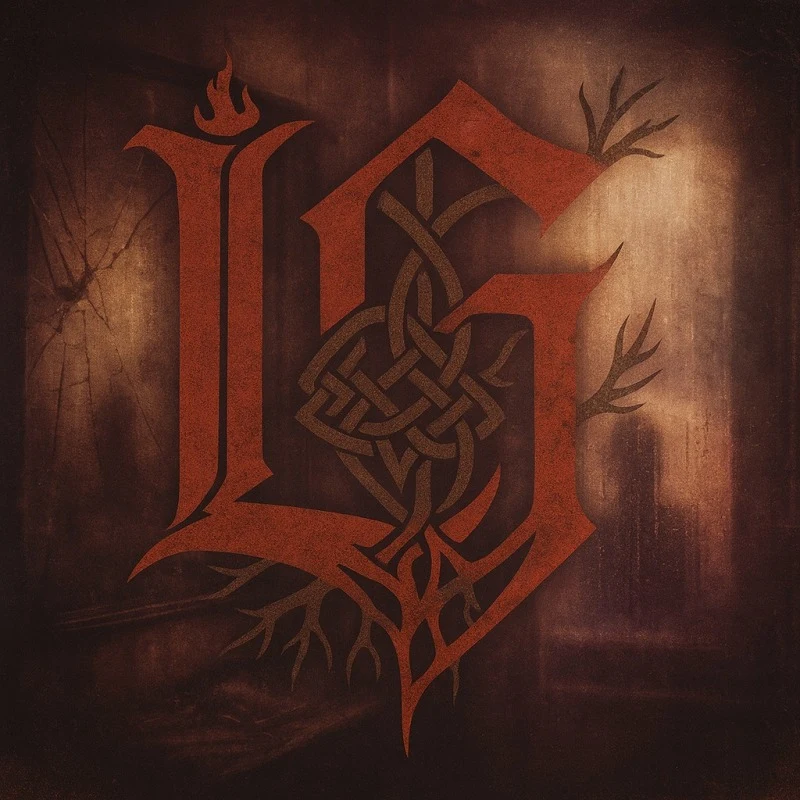

ShadowWork
Released January 1, 2026 · Lazarus Grimm
ShadowWork is not an album about doing the work. It is the work. Every song on this record was written directly from my shadow work journal — the raw, unfiltered pages where I went to confront the parts of myself I had kept in the dark. This is not a concept record. This is a document.
Shadow work is the practice of descending into the interior — facing the wounds you buried, the patterns you inherited, the lies you were taught, and the versions of yourself you abandoned along the way. I did that work. I wrote it down. And then I set it to music, because some truths are too heavy to carry alone and too important to stay silent.
This album moves through the full landscape of that process. The childhood house where silence was survival. The stepfather whose shadow still fell long after I left. The mother who chose him anyway and what that cost. The nine-year-old boy who saw something on a screen that rewired the way he saw women, and the decades of work to undo it. The exhaustion of being the one who holds everything together. The slow discovery that letting my wife carry something isn’t weakness — it’s the whole point. And underneath all of it, one long thread of addiction that I traced all the way back to my third great-grandfather Cornelius — a Civil War veteran who reached for a bottle to survive the peace, and whose reach echoed forward through generations until it reached me. I chose to end it.
ShadowWork is for anyone doing the work — in therapy, in recovery, in the long slow process of becoming someone your younger self would have been safe with. It’s for men who were never taught that feeling things was allowed. It’s for adult survivors of childhood trauma who still carry guilt for things that were never their fault. And it’s for the person who has looked in the mirror and decided that the cycle ends here.
ShadowWork sounds like the interior feels — intimate, textured, and unguarded. Built on lo-fi trip-hop beats and warm sample-based production in the tradition of Bojet, whose work has sampled Tom Walker, this album carries the emotional rawness and confessional directness of Tom Walker’s songwriting throughout. The production is close and personal — vinyl crackle, soft drum loops, layered atmospherics that feel like a late night alone with a journal. This is headphones music. Music that wants you in a quiet room with nowhere to hide.
- Locked Away Pulled directly from my journal: the inner child hiding behind adult performance, the disconnection that comes from a childhood spent surviving instead of living. It begins as a confession and ends with the radical act of offering my own hand when no one else does.
- The Lie I Learned Written for every man who had his understanding of women shaped by pornography before anyone taught him what love actually looks like. I know this terrain personally. This song names what that does to a boy and traces the long road of unlearning it.
- Hear Me A cry for witness in the middle of collapse. Sometimes the only thing I need is for someone to know that I am barely holding on. This song exists because I needed to say that out loud.
- I Don’t Hate You A complex, unresolved address to my mother. Not a forgiveness song — a truth-telling song. She chose him. I stayed gone. We both carried silence. This is me naming what that cost without pretending it has been resolved.
- Learning to Lean From my journal: the slow, uncomfortable discovery that I had built my identity on being the one who never needed anything. About learning that letting my wife carry something isn’t a failure of strength — it is what intimacy actually requires.
- ShadowWork The album’s title track and its centerpiece. Me writing directly to my childhood self — naming the harm, releasing the shame, and telling the little boy he was never meant to carry any of it. The song that gave the album its name.
- Not a Master From the journal pages about spiritual leadership and ego. The tension between feeling called to something and the fear that stepping into it will make me just like the people who hurt me. About learning to lead with love instead of control.
- I Am Enough A declaration pulled from the work — for anyone paralyzed by the gap between who they are and who they think they need to be before they can start. I wrote this for myself. I mean it for everyone.
- Free to Seek My deconstruction and reconstruction of faith set to music. For survivors of religious systems that taught them God was surveillance. Includes a ritual of written release — the same practice I used in my actual shadow work.
- Pause About learning to stop running. From childhood dissociation to adult avoidance, this song traces the arc of a person who learned that disappearing was survival and is now learning, one breath at a time, that it no longer has to be.
- Gratitude and Release My family’s winter solstice ritual set to music. Fire, bread, Hebrew prayer, Greek scripture, and the practice of naming what we are releasing into the dark of the year. Sacred, communal, and completely real.
- Lanterns for the Line The song that anchors the album’s deepest theme. I trace my addiction back through the generations to my third great-grandfather Cornelius — a Civil War veteran who survived the battlefield and reached for a bottle to survive the peace. That reach echoed forward through every generation until it reached me. This song is the moment I chose to end the transmission.
- Breath of Yahweh A prayer rooted in the Hebrew understanding of the name Yahweh as breath itself. Still, grateful, and deeply at rest after everything that came before it.
- Burning Out From the journal pages about my relationship with work, creativity, and the cycle of hyperfocus and collapse. About building a sustainable rhythm instead of chasing a rush and paying for it later.
- Not Your Burden About the specific guilt of having left my brother behind in a dangerous home — and the boundary work required to love someone without being consumed by their chaos. I own the choice I made. I also own the right to protect what I have built.
- Living Water – Immanuel The album’s closing meditation. Immanuel — God with us — as living water. The presence that doesn’t fix everything but makes everything survivable. A quiet, grateful landing after the hardest record I have ever made.